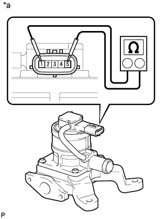
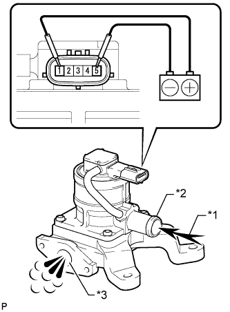

КЛАПАН ПЕРЕКЛЮЧЕНИЯ ПОДАЧИ ВОЗДУХА (для ряда 1) > ПРОВЕРКА |
| 1. ПРОВЕРЬТЕ КОМПЛЕКТ КЛАПАНА СИСТЕМЫ СНИЖЕНИЯ ТОКСИЧНОСТИ ОТРАБОТАВШИХ ГАЗОВ |
|  |
Измерьте сопротивление в соответствии со значениями, приведенными в таблице ниже.
| Контакты для подключения диагностического прибора | Условие | Заданные условия |
| 1 - 5 | 20°C (68°F) | 4,5 - 5,5 Ом |
| 1 - масса | Всегда | 1 МОм или более |
| 5 - масса |
| *a | Устройство с неподсоединенным жгутом проводов (комплект клапана системы снижения токсичности отработавших газов) |
 |
Проверьте работу комплекта клапана системы снижения токсичности отработавших газов.
Убедитесь, что воздух не идет от отверстия А к отверстию В.
| *1 | Воздух |
| *2 | Патрубок A |
| *3 | Патрубок B |
|  |
Подайте напряжение аккумуляторной батареи на контакты 1 и 5.
Убедитесь, что воздух поступает из канала А в канал В.
| *1 | Воздух |
| *2 | Патрубок A |
| *3 | Патрубок B |